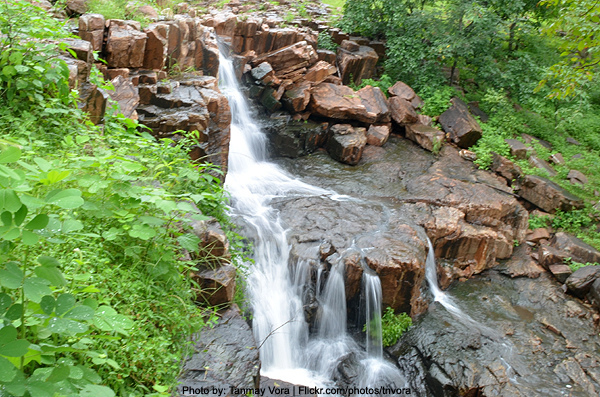

Tucked away in a forest, there are secrets to be revealed...
An ancient city, a gateway to Rajasthan. A hiding place for rulers, concealed from enemies, citizens, angry wives, even from the sun, tucked between sacred hills on the east and west. And the mystery of abandonment, decay.

Ancient temples, some still performing their pujas deep within this dense jungle, itself the larger temple, the trees themselves the gods.
Adivasi settlements, their lives rooted in their connection to the forest, from whom you might learn to listen to the deep hum of the world that envelops these scattered whispers of human constructions...
Come. Listen. Learn. Know your Self. You may return to your homes, your cities, your roads, but the forest will never leave you.
Friendly tips
The fig trees, when in fruit, are good places to look out for the endangered Grey Hornbill and Brown-headed Barbet who will come to nibble. Grey Hornbills can also be found at a Banyan tree near the campsite, when it is out with its bright red fruit. On another tree on the other side of the camp look for woodpeckers, and fruit birds and prey birds at the top, especially during a particular half hour in the afternoon (the exact time of which changes).
The ancient Polo city was built around the river Harnav, an ancient water body spoken of in the Puranas. It is believed to have been established in the 10th century by the Parihar kings of Idar, and was then conquered in the 15th century by the Rathod Rajputs of Marwar. The name is derived from pol, the Marwari word for "gate," signifying its status as a gateway between Gujarat and Rajasthan. It was built between Kalaliyo in the east, the highest peak in the area, and Mamrehchi in the west, considered sacred by the local adivasis. Together they block sunlight for most of the day, which might provide an explanation for the otherwise mysterious abandonment of the ancient city.
The 400 square km area of dry mixed deciduous forest is most lush between September and December after the monsoon rains when the rivers are full, but at any time of the year it provides a rich wildlife experience. There are more than 450 species of medicinal plants, around 275 of birds, 30 of mammals, and 32 of reptiles. There are bears, panthers, leopards, hyenas, water fowl, raptors, passerines, and flying squirrels (mostly heard, rarely seen), all living under a canopy of diverse plants and trees. During winter, all manner of migratory birds occupy the forest; during the rainy season there are wetland birds.
Until recently, this area was not well-known, and saw very few visitors. The numbers have increased dramatically in the last few years, thanks to a few individuals working to promote its beauty. This increased flow comes with a price, however. It is important to remember, as visitors, to approach each destination and its inhabitants, human or otherwise, humbly, openly, and with the awareness that every interaction, no matter how slight, carries its own impact on the area whether we know it or not.
How to get there
By road: Vijaynagar, the nearest town is 120 km from Udaipur and 160 km from Ahmedabad, and is accessible by the National Highway 8. Public transport is available, but ask around beforehand, because it is not always reliable.